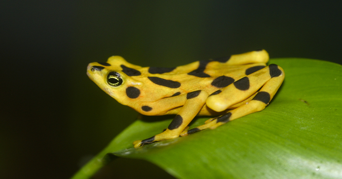

Mammals

Reptiles are air-breathing vertebrates covered in special skin made up of scales, bony plates, or a combination of both.
They include crocodiles, snakes, lizards, turtles, and tor- toises. All regularly shed the outer layer of their skin. Their metabolism depends on the temperature of their environment.
Unlike birds and mammals, reptiles do not maintain a constant internal body temperature. Without fur or feathers for insulation, they cannot stay warm on a cold day, and without sweat glands or the ability to pant, they cannot cool off on a hot one. Instead, they move into the sun or into the shade as needed. During cooler parts of the year they become inactive. Because of their slow metabolism and heat-seeking behavior, reptiles are cold-blooded.
Reptile reproduction also depends on temperature. Only boas and pythons give birth to live young. The other species lay their eggs in a simple nest, and leave. The young hatch days to months later. The soil temperature is critical during this time: It determines how many hatchlings will be male or female. Young reptiles can glide, walk, and swim within hours of birth. Reptiles first appear in the fossil record 315 million years ago and were the dominant animals during the Mesozoic era, which lasted for 270 million years until the extinction of the dinosaurs.
Amphibians are small vertebrates that need water, or a moist environment, to survive.
The species in this group include frogs, toads, salamanders, and newts. All can breathe and absorb water through their very thin skin.
Amphibians also have special skin glands that produce useful proteins. Some transport water, oxygen, and carbon dioxide either into or out of the animal. Others fight bacteria or fungal infections. And at least one—in each species—is used for defense.
To warn potential predators, the most toxic amphibians are also the most brightly colored. Curare [kyoo-RAW-ree], for example, is found on the skin of colorful poison dart frogs. Another special feature of most amphibians is their egg-larva-adult life cycle. The larvae are aquatic and free-swimming—frogs and toads at this stage are called tadpoles. At a certain size, the young develop limbs and lungs. Some also lose their tails. Eventually, they hop or climb out of the water as adults, and spend the rest of their lives on land. This process is known as metamorphosis.
Like reptiles, amphibians are cold-blooded. Because of their special skin, they require very specific living conditions. Too much sun can damage their cells. Too much wind can dry their skin and dehydrate the animal. As a result, amphibians are the first to die off when their habitats are disturbed or contaminated with chemicals like weed killers. This is the main reason over half of all frog species are in danger of extinction.
Reptiles and Amphibians in our National Park
- Tiger salamander
- Long-toed salamander
- Idaho giant salamander
- Coeur d'Alene salamander
- Boreal chorus frog
- Pacific tree frog
- Plains spadefoot toad
- Rocky Mountain tailed frog
- Western toad
- Woodhouse's toad
- Great Plains toad
- Columbia spotted frog
- Northern leopard frog
- Northern alligator lizard
- Common sagebrush lizard
- Greater short-horned lizard
- Pygmy short-horned lizard
- Western fence lizard
- Western skink
- Gophersnake
- Prairie rattlesnake
- Rubber boa
- Plains garter snake
- Common garter snake
- Terrestrial garter snake
- Eastern racer
- Sooth greensnake
- Western hog-nosed snake
- Painted turtle
- Snapping turtle
- Spiny softshell
- American bullfrog
- Red-eared slider